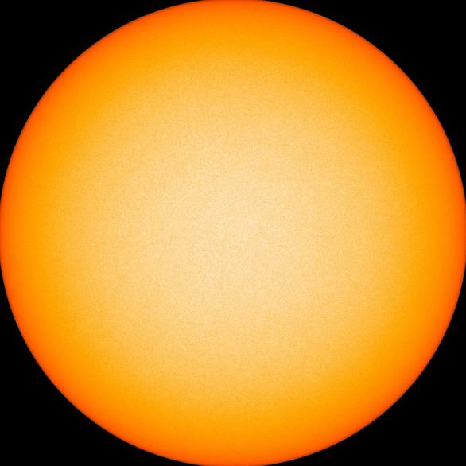
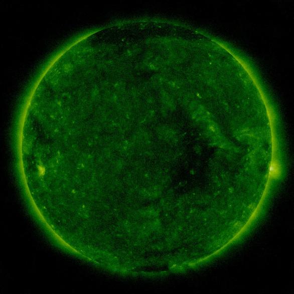

The Sun Now

Visible Light:
Intensitygram (~5700°C)
- sunspots appear darker
Magnetogram (6173Å):
Magnetic fields in the photosphere
- black/white showing opposite poles

Soft X-Rays (94Å):
Flares (~6million°C) in the corona
- hottest regions appear white
Credit: NASA Solar Dynamics Observatory